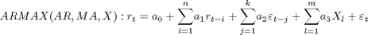

Autoregressive Conditional Mean & Variance
Allows the estimation of the family of ARMAX-GARCH of any order of AR, MA, ARCH and GARCH terms with the Gaussian, Student-t, Generalized Error, Modified Cauchy, Hansen's Skew-t, Logistic, Laplace, Rayleigh, Centered Cauchy, Extreme Value Distribution Type 1, Generalized Exponential and Gram and Charlier expansion series with constant higher moments.
Contents
ARMAX Models

GARCH Models